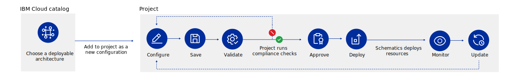

Regardless of which cloud platform that you chose to host this application, IBM Cloud projects can help you manage the lifecycle and compliance.
Projects are designed with an IaC and a compliance-first approach that helps to ensure that your application is managed, secure, and always compliant. And, that you can configure, deploy, and monitor deployments by using DevOps best practices.
Each project includes tools to scan for potentially harmful resource changes, compliance, security, and cost, as well as tracking configuration versioning and governance.